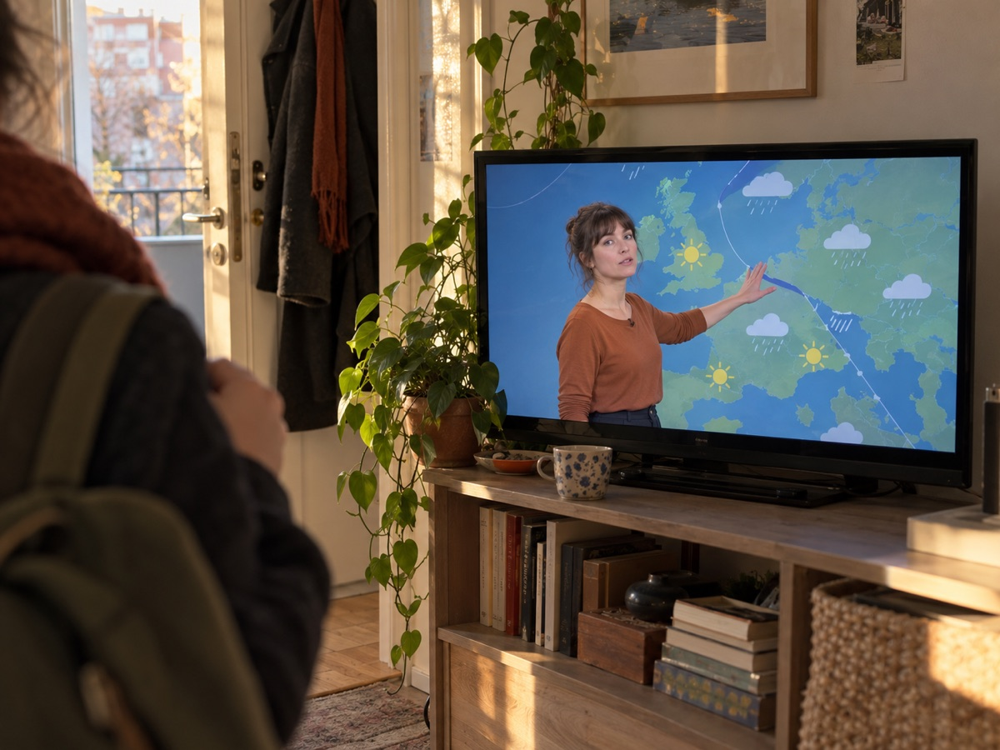
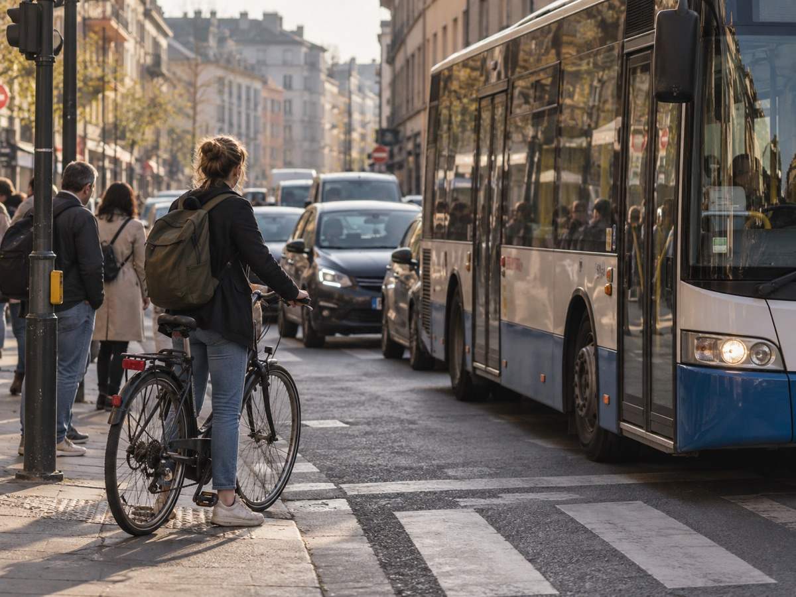
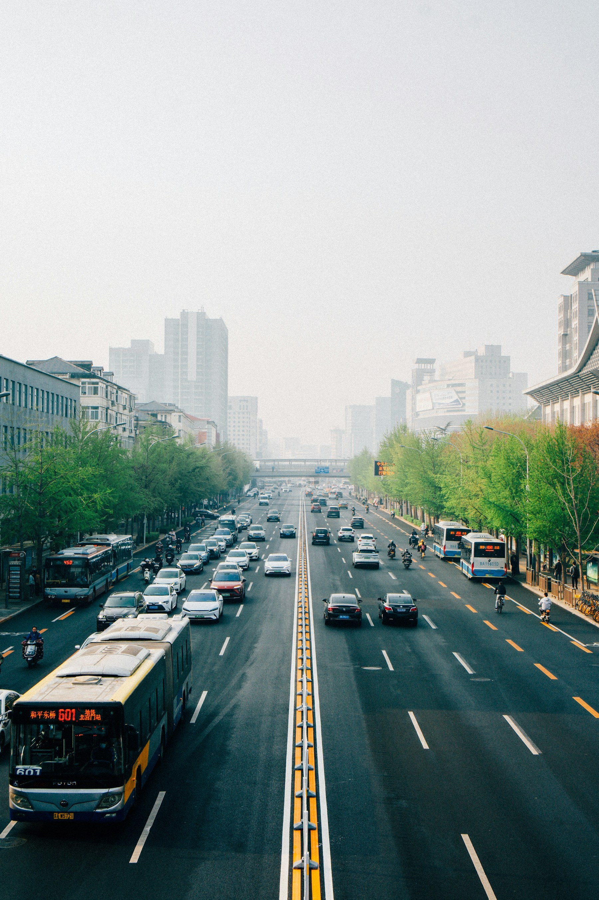
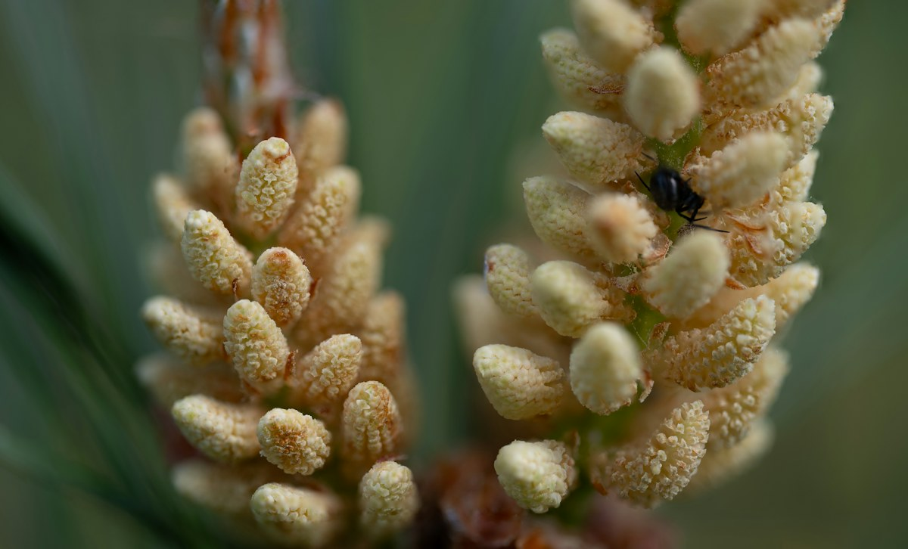
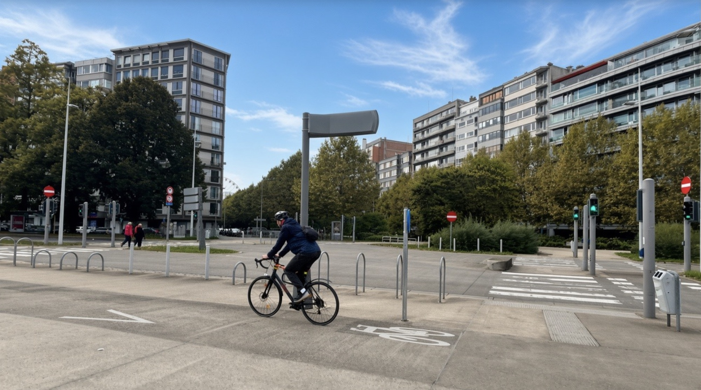
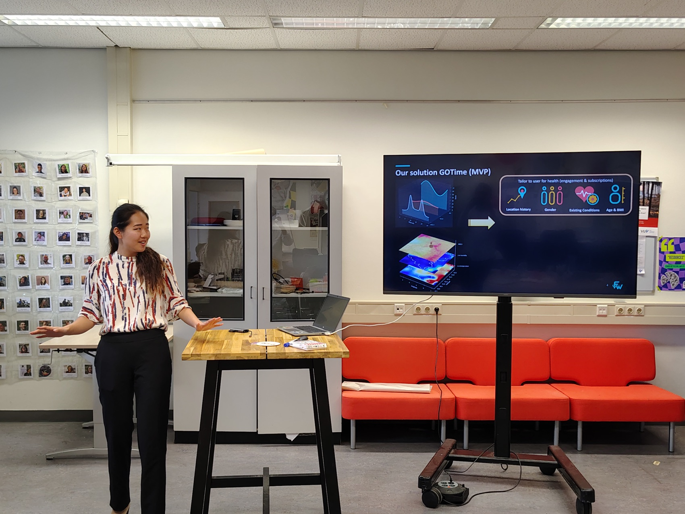

FerryWellCo · What we are building
Heat and air pollution affect how we live and work
Heat can strain the body, and polluted air can matter more during exertion. FerryWellCo brings air-quality science, heat-stress research and spatial information into services people already use. GOTime is our first prototype for outdoor activity. We are also exploring outdoor work and insurance.



 Illustrative scenes
Illustrative scenes
The forecast has plenty to say. What does it mean for your day?
Why this matters
What the numbers leave out
Heat can place strain on the heart. During exertion, a person breathes more air, including pollutants. Pollen can be another consideration. What matters changes with the place, the time and what someone is about to do. A person planning an activity or a team organising outdoor work still needs an answer they can use.



Our first working prototype
What if the app helped with the decision?
GOTime starts with a run someone already has in mind. Inside a fictional activity app, it suggests a next step, shows a time window when one fits the plan, and explains the heat and air-quality conditions behind the answer.
See Sanne's example ↗How we work
We want environmental research to reach the people who need it
Our starting point is the relationship between outdoor conditions and the person or group affected by them. We bring research and spatial context into a service they already use. GOTime applies that approach to outdoor activity. We are exploring how the same foundation could support outdoor work and other settings.

The people behind the work
Meet the team doing the work
Our research began with air pollution, heat and cardiovascular health. We are bringing those findings into services people already use.

Another setting we are exploring
We are also exploring outdoor work
Teams planning outdoor work also face decisions about heat and air quality. We are speaking with organisations to understand where environmental intelligence could help them plan.
Tell us about your work ↗Articles and updates
Notes from the work, soon
This space will hold articles we share on LinkedIn, short research notes and updates from the team. There is no feed yet. We will post when we have something useful to share.
Contact
Where does this decision happen in your product?
If you build a wellness platform, tell us where people plan outdoor activity in your app. We are also speaking with teams who plan outdoor work, and welcome questions about the research and GOTime prototype.